Flags Made in the Editor
Twelve flags made in Quick Flags — exploring heraldic traditions, pirate history, fantasy world-building, and regional symbolism. Each one shows what the editor can do, with tips on how to make your own.
Design Your Own Flag →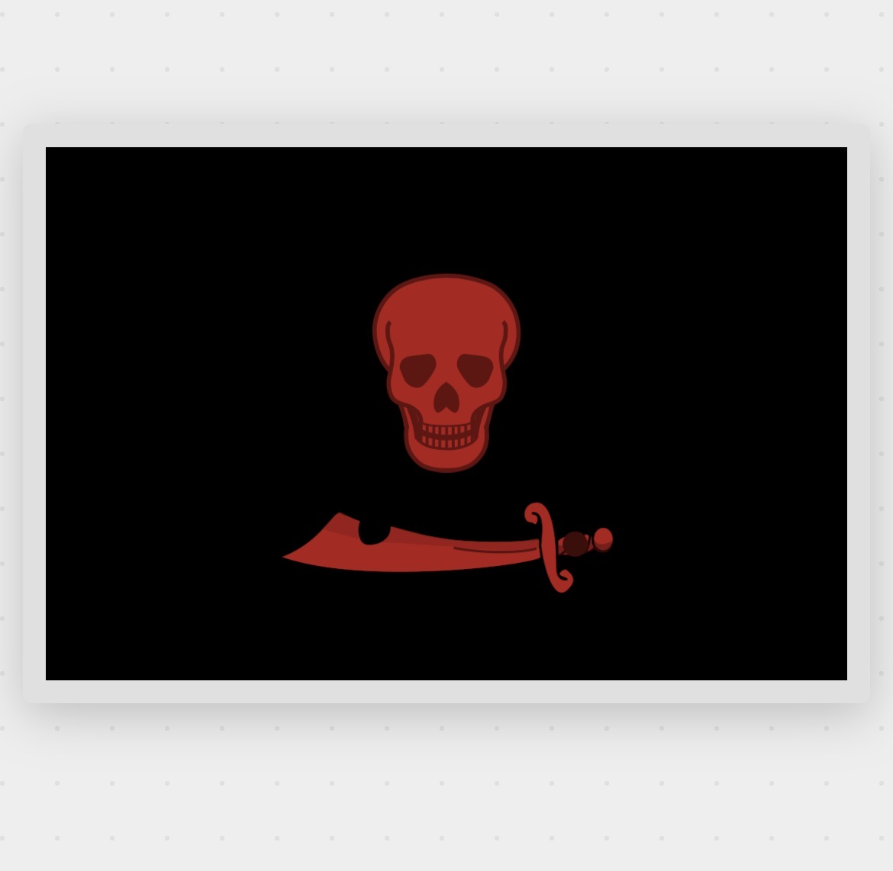
Pirate flags — called Jolly Rogers — emerged in the early 1700s as psychological weapons. The familiar white skull on black signalled that pirates would spare surrendering crews. A red flag meant the opposite: no quarter. Caribbean pirates and North African corsairs flew crimson to issue a final, absolute warning.
To make one: set a solid black background, open the Emblems panel and search "skull" in the Human category, then add a blade from Weapons. Set both emblems to red. Two shapes on a black field — that's the whole flag.
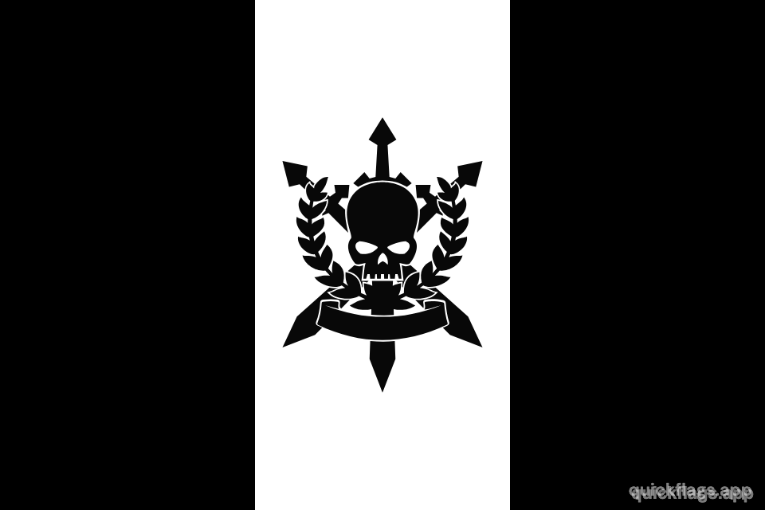
Battle standards with a central pale — a wide vertical band flanked by darker outer bands — are a classic military flag structure. This one draws on the Warhammer universe, where Gothic skulls wreathed in Roman laurels represent the Imperium's theocratic power. The monochrome palette makes the emblem do all the work.
To make one: add a Stripes layer set to 3 vertical bands and colour them black, white, black. Open Emblems, browse the Warhammer category, and centre the skull-and-laurels badge on the white band.
Heraldic & Coat of Arms
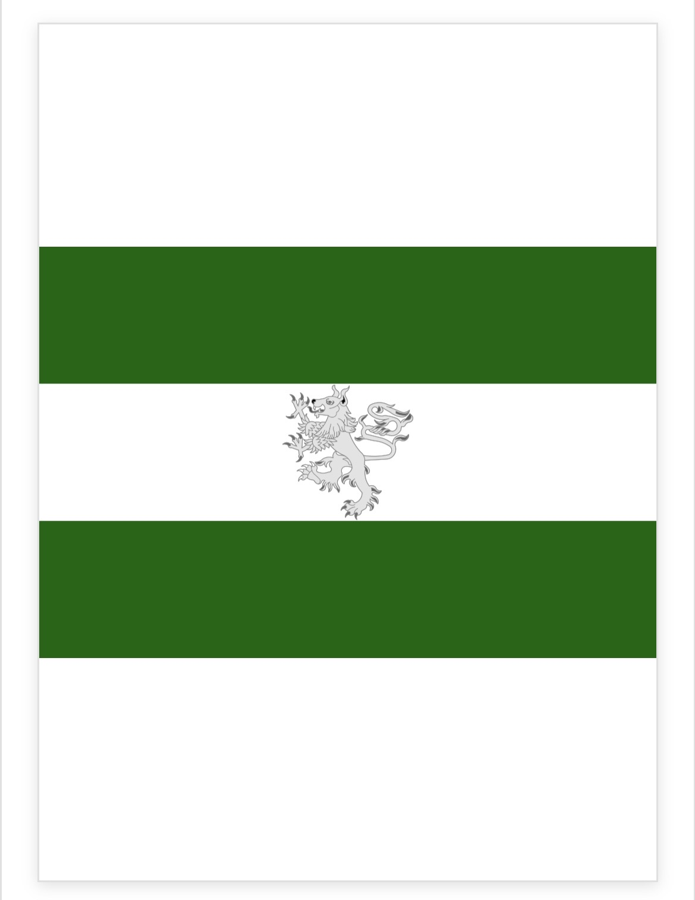
The rampant lion is the most common charge in European heraldry — it appears on the arms of Scotland, England, and Norway. Add a 3-band vertical Stripes layer (green–white–green), then search "lion" in Emblems → Animals and place it on the white centre pale.
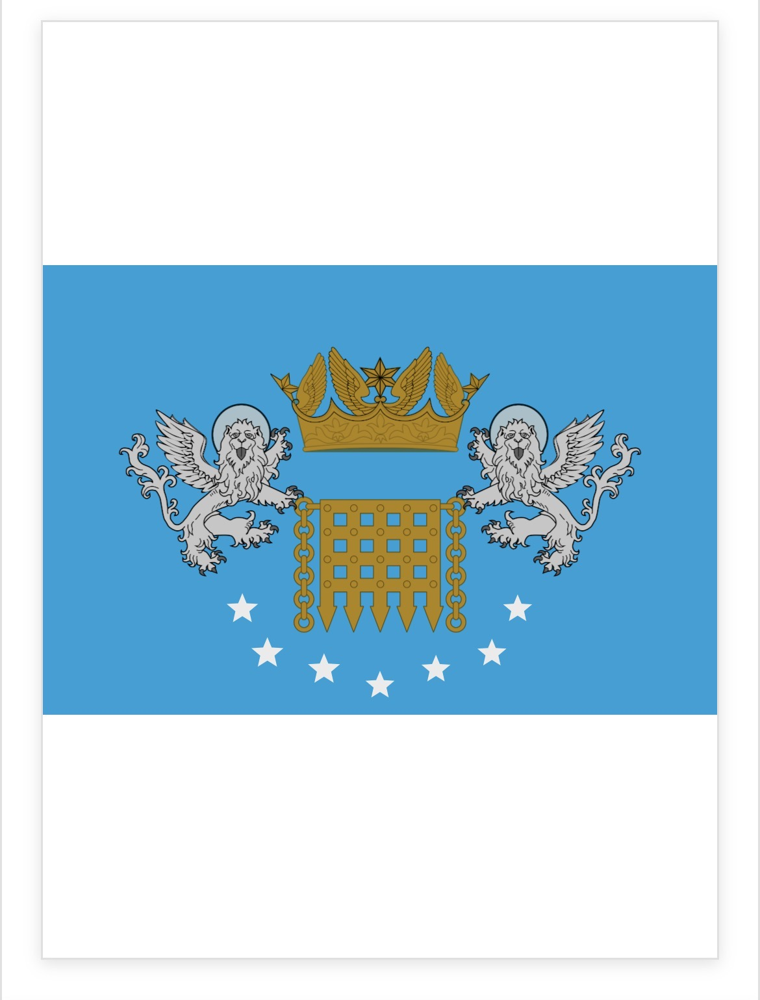
City flags often carry a full coat of arms: a central charge flanked by animal supporters, topped by a crown. Set a blue background and stack multiple emblems — portcullis from Structures, winged lions from Animals, a crown from Regal — positioning each layer independently.
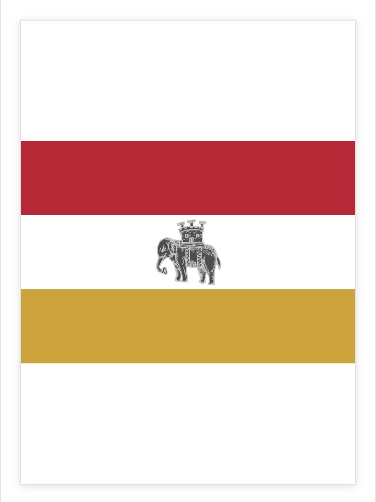
The elephant carrying a fortified tower (called a howdah) has appeared in civic heraldry since the Middle Ages — found in the arms of Southwark, Coventry, and many English boroughs. Add a crimson–white–gold triband and search "elephant" in Emblems → Animals.
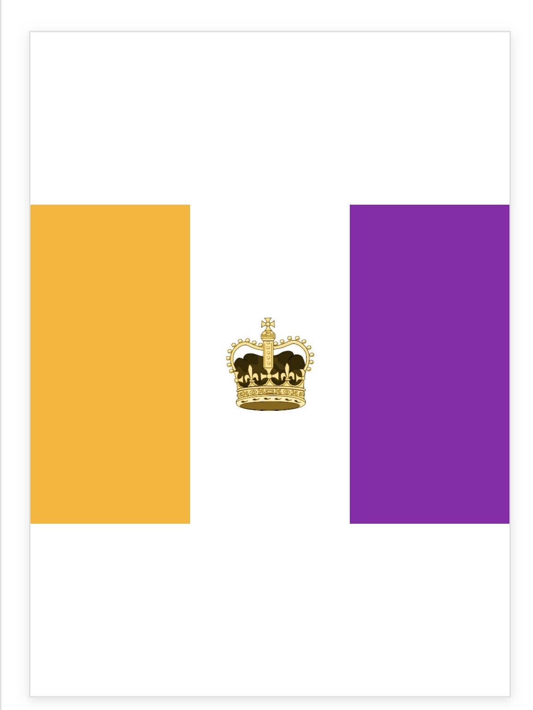
Royal standards traditionally use the dynasty's colours with a crown or cypher as the central charge. Purple has signified royalty since antiquity. Add an amber–white–purple triband, then browse Emblems → Regal and try different crown styles on the white centre.
Fantasy & World-Building
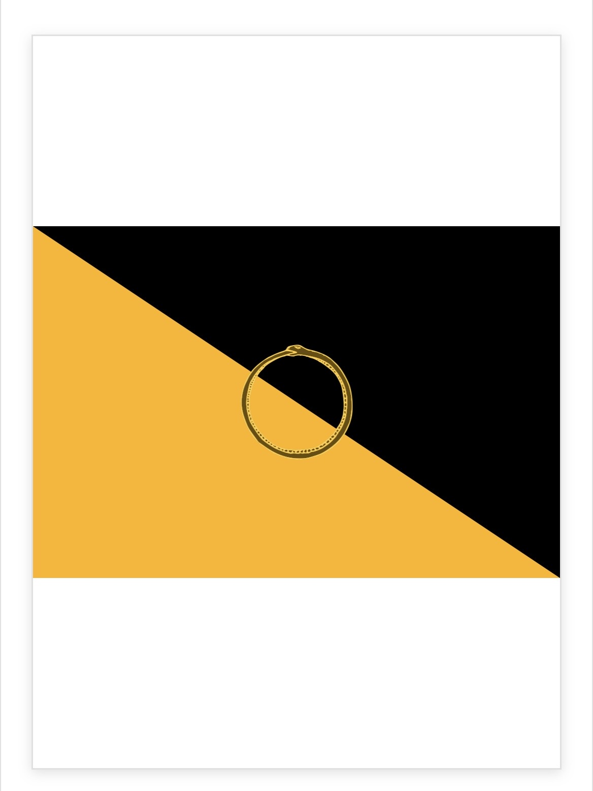
The ouroboros — a snake eating its own tail — appears in ancient Egyptian tombs, Greek alchemical texts, and Norse mythology. A diagonal split (called "per bend" in heraldry) creates dynamic tension. Add a diagonal Shapes layer, set it black and gold, then search "snake" in Emblems and place it on the divide.
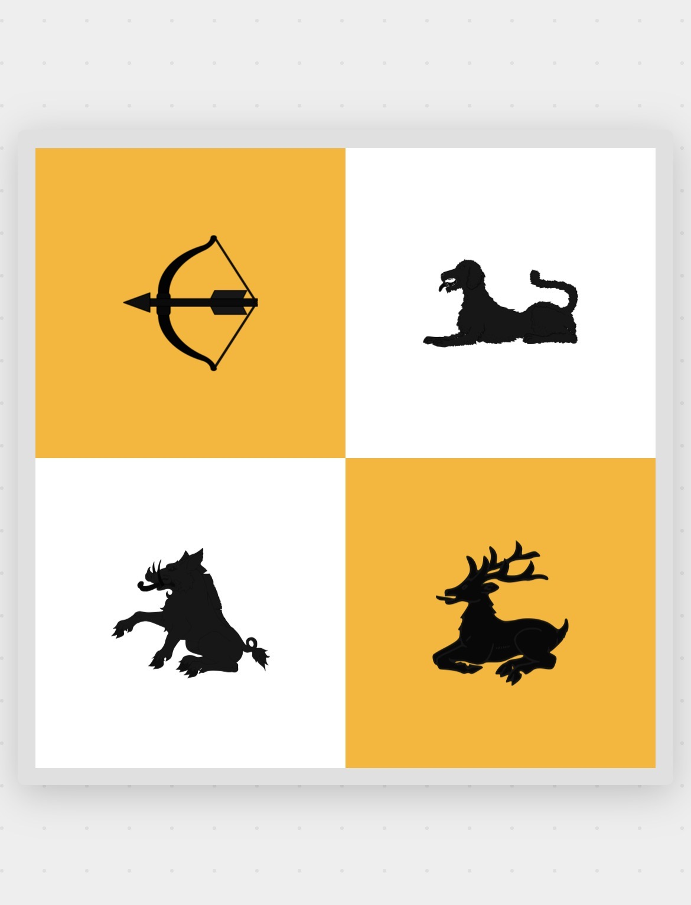
Quartering in heraldry combines multiple coats of arms into one shield — medieval dynasties used it to show inherited kingdoms. Add a 4-quadrant Stripes layer (white and gold), then place one emblem per quarter: a crossbow (Weapons), lion, boar, and stag (Animals).

Single-symbol flags follow a tradition used in many national flags — Lebanon's cedar, Japan's rising sun. Oil lamps have symbolised learning since ancient Greece. Set a terracotta background, open Emblems → Objects, search "lamp", and centre the emblem slightly above the mathematical middle for visual balance.
Animal & Pastoral
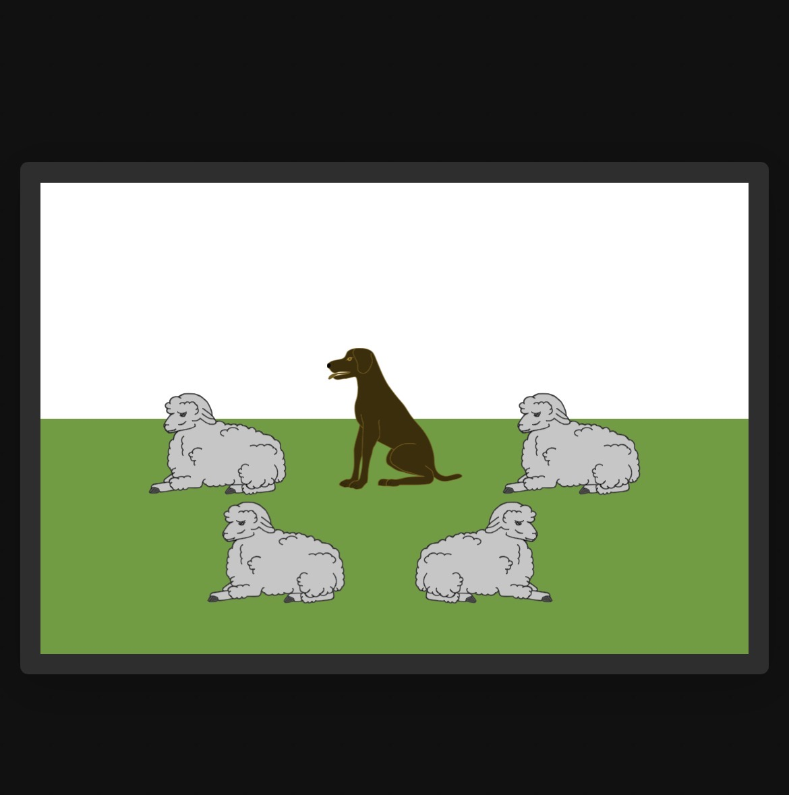
Regional flags often depict agriculture rather than heraldic symbols — Swiss cantonal and English county banners use the animals that defined local economies. Add a white–green horizontal bicolor, then search "dog" and "sheep" in Emblems → Animals and arrange them in a loose scene.
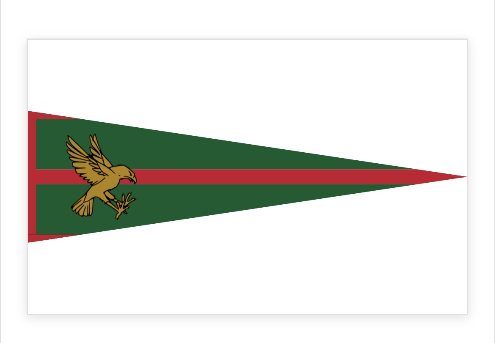
Pennants (triangular flags) were the standard medieval military banner — knights flew them on lances, regiments marched under pennon-tipped pikes. Change the flag shape to pennant using the Shape selector, add a green field with a red centre stripe, then search "eagle" in Emblems → Birds.
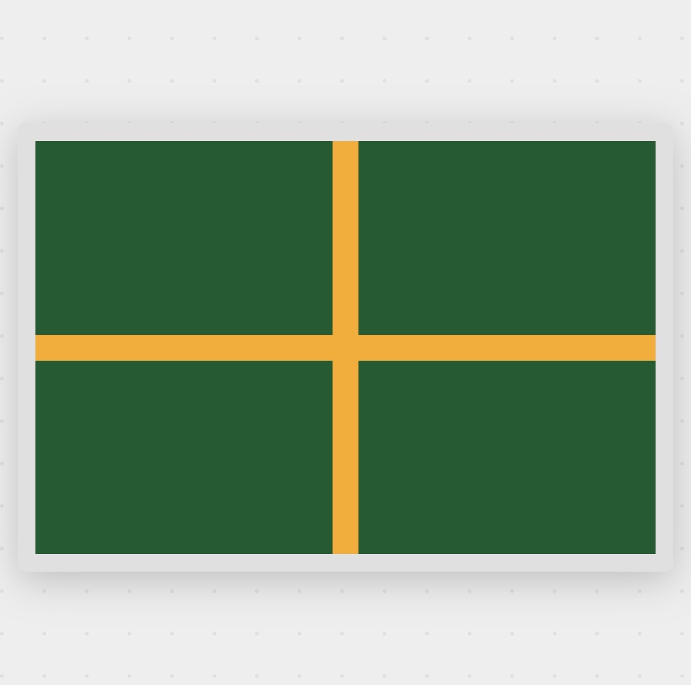
Every Nordic country uses the asymmetric cross with its vertical arm offset toward the hoist — a tradition dating back to Denmark's Dannebrog, the oldest continuously-used national flag. Add a Nordic Cross pattern layer, set the field to dark green and the cross to gold. The offset is built in.